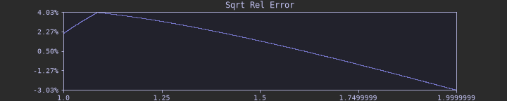

On The Topic Of Obsessively Approximating Roots
Background
Since the dawn of time, humanity looked upon the IEEE-754 float32 format and thought: How can I abuse this?
A while ago, I posted about Preserving Small Values, where I talked about a method for calculating roots.
It was a bit clunky and can be summarised as doing a binary search, looking for a good magic number.
Today, for no real reason at all, we are going to try and improve this.
Whats happening at a high level?
Seeing something like this can look a bit daunting:
float approx_sqrt(float x)
{
uint z = asuint(x) >> 1;
return asfloat(z + MAGIC);
}
The first line really just taking the floats bits and dividing them by 2.
The second line adds something magical to it and together, they somehow approximate √.
But whats really going on here?
At a macro level, it exploits the encoding of the floating point format.
With most of the heavy lifting taking place in the exponent bits:
A correction term is still needed, due the exponent not being stored as an unsigned integer.
Being brutally honest, the mantissa bits are mostly just fudged during this process.
But since we're already going to add a correction term, we might aswell try to minimise the max relative error in the same operation.
Convergence?
I mentioned before that I have no idea why each power has a clear convergence to some "best" magic number.
So maybe we can try to analytically figure out why this may be.
If we keep with something nice and simple, like √, it's a root of 2, which at least vaguely sounds like a nice number to start prodding in isolation.
uint z = asuint(x) >> 1;
return asfloat(z + MAGIC);
- We assume the input number is positive, so we'll just ignore the sign.
- The exponent bits will get halved, the core of the approximation.
- The mantissa bits will also get halved, but may also have some of the original exponent spilling into it.
The useful thing to look at isn't the output, it's the magic number each input wishes it had.
That is, for every input we can work out the one value that would make the approximation exact:
Whatever single constant we end up shipping has to serve that entire column at once, so let's look at some dry run inputs:
| Input | Input (Hex) | Sqrt | Sqrt (Hex) | z (Hex) | Ideal Magic (Hex) |
|---|---|---|---|---|---|
| 1.0 | 0x3f800000 | 1.0 | 0x3f800000 | 0x1fc00000 | 0x1fc00000 |
| 1.1 | 0x3f8ccccd | 1.0488088 | 0x3f863f5e | 0x1fc66666 | 0x1fbfd8f8 |
| 1.5 | 0x3fc00000 | 1.2247449 | 0x3f9cc471 | 0x1fe00000 | 0x1fbcc471 |
| 1.8 | 0x3fe66666 | 1.3416408 | 0x3fabbae3 | 0x1ff33333 | 0x1fb887b0 |
| 2.3 | 0x40133333 | 1.5165750 | 0x3fc21f22 | 0x20099999 | 0x1fb88589 |
| 2.6 | 0x40266666 | 1.6124515 | 0x3fce64d0 | 0x20133333 | 0x1fbb319d |
| 2.9 | 0x4039999a | 1.7029386 | 0x3fd9f9e5 | 0x201ccccd | 0x1fbd2d18 |
| 3.2 | 0x404ccccd | 1.7888543 | 0x3fe4f92e | 0x20266666 | 0x1fbe92c8 |
| 3.5 | 0x40600000 | 1.8708287 | 0x3fef7751 | 0x20300000 | 0x1fbf7751 |
Across every input above it stays inside [0x1fbf7751, 0x1fc00000], but evaluating [1, 2) give us the extremes we need to pick a middle ground that stops the maximum error
ever getting out of control.
It behaves like a sawtooth within [1, 2), but swaps between [2, 4), which will be due to the mantissa spilling.
So there is a bit of a pattern here, but this is just for sqrt, where "divide the exponent" happens to be a single bit shift.
Higher roots aren't, and reasoning about where the mantissa lands gets confusing fast.
With that in mind, maybe analytically chasing a closed form isn't the fastest way forward.
Calculating Magic Numbers Faster (Lowest ULP Error)
In my original post, the method I used to calculate magics was at it's core, probing the maximum error for candidate magic numbers.
This would be refined after a series of passes until a best candidate was picked.
But this is a bit silly and we can get a good magic number in a single pass:
from numpy import linspace, float32, uint32
def get_root_magic(root):
# [1, 2)
input_values = linspace(
0x3f800000,
0x40000000,
0x40000000-0x3f800000,
dtype=uint32
)
iroot = 1.0 / root
# Initial approximation, pre correction
initial_adj = (input_values.astype(float32) * float32(iroot)).astype(uint32)
# The actual pow value we're trying to match against
ref_value = (input_values.view(float32) ** float32(iroot)).view(uint32)
# Pick the mid point between the min and max extremes
delta = ref_value - initial_adj
return (delta.min() + delta.max()) // 2
Our goal is to minimize the max absolute error.
Rather than probing at all, we simply find which inputs need the smallest correction and largest and take their mid point.
| Root | Min Input Delta | Max Input Delta | Magic |
|---|---|---|---|
| 2 | 0x1fb504e8 | 0x1fc00010 | 0x1fba827c |
| 2.2 | 0x229821bf | 0x22a2e8c9 | 0x229d8544 |
| 2.4 | 0x2500315f | 0x250aaacd | 0x25056e16 |
| 2.71828 | 0x2819d658 | 0x2823bf8a | 0x281ecaf1 |
| 3 | 0x2a4befb1 | 0x2a555560 | 0x2a50a288 |
| 3.14159265359 | 0x2b406901 | 0x2b498e19 | 0x2b44fb8d |
| 4 | 0x2f9837ec | 0x2fa00008 | 0x2f9c1bfa |
| 4.5 | 0x315c6d3f | 0x31638e45 | 0x315ffdc2 |
| 5 | 0x32c63bb9 | 0x32ccccd6 | 0x32c98447 |
Refining What's Tested
We're now at the point where we can calculate a magic number in a reasonable time, but can we go futher?
Currently, we're testing values between 0x3f800000 and 0x3fffffff, that's 8388607 different combinations!
Looking at our previous table for inputs:
| Root | Min Input | Min Input (Hex) | Max Input | Max Input (Hex) |
|---|---|---|---|---|
| 2 | 1.9999961853027344 | 0x3fffffe0 | 1.0000038146972656 | 0x3f800020 |
| 2.2 | 1.9999961853027344 | 0x3fffffe0 | 1.0000190734863281 | 0x3f8000a0 |
| 2.4 | 1.9999961853027344 | 0x3fffffe0 | 1.000003695487976 | 0x3f80001f |
| 2.71828 | 1.9999961853027344 | 0x3fffffe0 | 1.000034213066101 | 0x3f80011f |
| 3 | 1.9999961853027344 | 0x3fffffe0 | 1.0000113248825073 | 0x3f80005f |
| 3.14159265359 | 1.9999961853027344 | 0x3fffffe0 | 1.0001410245895386 | 0x3f80049f |
| 4 | 1.9999961853027344 | 0x3fffffe0 | 1.000003695487976 | 0x3f80001f |
| 4.5 | 1.9999961853027344 | 0x3fffffe0 | 1.0000110864639282 | 0x3f80005d |
| 5 | 1.9999961853027344 | 0x3fffffe0 | 1.0000033378601074 | 0x3f80001c |
It's pretty clear that the inputs to compute the min value approaches 2.0 and the max approaches 1.0.
Big input give minimum, small input give maximum.
So as one does, I went about trying to find some reasonable bounds.
Using [0.000030517578 -> 0.5) ([0x38000000 -> 0x3f000000)) as my input search range.
This took ages.
First I added lazy multithreaded (OpenMP) and killed it a couple of times to reduce the bounds tested against (originally after like 2 hours it was like 0.1% done).
find_min_max_input.cpp
#include <math.h>
#include <stdint.h>
#include <stdio.h>
#include <string.h>
#include <algorithm>
#include <mutex>
#include <thread>
#include <unordered_map>
#include <utility>
#include <vector>
#if defined(__GNUC__) || defined(__clang__)
#define FORCEINLINE __attribute__((always_inline)) inline
#elif defined(_MSC_VER)
#define FORCEINLINE __forceinline
#else
#define FORCEINLINE inline
#endif
FORCEINLINE uint32_t asuint(float x) {
uint32_t z;
memcpy(&z, &x, sizeof(x));
return z;
}
FORCEINLINE float asfloat(uint32_t x) {
float z;
memcpy(&z, &x, sizeof(x));
return z;
}
typedef struct CalcMagicExtra_ {
uint32_t delta_min_input;
uint32_t delta_max_input;
uint32_t delta_min;
uint32_t delta_max;
} CalcMagicExtra;
uint32_t calc_root_magic_(float inv_root, CalcMagicExtra* out_extras) {
CalcMagicExtra working;
working.delta_min = 0xffffffffu;
working.delta_max = 0u;
auto calc_range = [&](const uint32_t start, const uint32_t end) {
for (uint32_t input = start; input < end; ++input) {
// Initial approximation, pre correction
uint32_t initial_adj = (uint32_t)((float)input * inv_root);
// The actual pow value we're trying to match against
uint32_t ref_value = asuint(powf(asfloat(input), inv_root));
// Pick the mid point between the min and max extremes
uint32_t delta = ref_value - initial_adj;
if (delta < working.delta_min) {
working.delta_min_input = input;
working.delta_min = delta;
}
if (delta > working.delta_max) {
working.delta_max_input = input;
working.delta_max = delta;
}
}
};
// // Initial guess
// // Use 3f800000 -> 3fa00000 + 3fd00000 -> 40000000
// // (5242880 iterations)
// calc_range(0x3f800000u, 0x3fa00000u);
// calc_range(0x3fd00000u, 0x40000000u);
// Refined range after a bit of initial searching + some saftey padding
// Use 3f800000 -> 3f810000 + 3ffe0000 -> 40000000
// (196608 iterations)
// [3ffe8160 | 3fffffe0] [3f800000 | 3f8061d4] | 0x380065ff [0.000031]
calc_range(0x3f800000u, 0x3f810000u);
calc_range(0x3ffe0000u, 0x40000000u);
if (out_extras) {
*out_extras = working;
}
// (delta_min + delta_max) >> 1, without overflow;
uint32_t magic = (working.delta_min & working.delta_max) +
((working.delta_min ^ working.delta_max) >> 1);
return magic;
}
void find_min_max_input() {
// Input range
// [0.000030517578, 0.5)
constexpr uint32_t start = 0x38000000u;
constexpr uint32_t end = 0x3f000000u;
constexpr uint32_t interval = 0x00000001u;
constexpr uint32_t num_inputs = (end - start) / interval;
// Total numbers crunched
std::atomic<uint32_t> total_done = 0;
// Global min-max range
std::mutex m;
std::pair<uint32_t, uint32_t> min_r(0xffffffffu, 0);
std::pair<uint32_t, uint32_t> max_r(0xffffffffu, 0);
// Wake flag, that tells the main thread we've got an update.
uint32_t wake_value{};
std::atomic_flag wake{};
// Final flag which is written too, when the routine is done.
bool done = false;
// Thread acts a payload for a `parallel-for`, the main thread
// acts a book-keeper, pretty much just printing the progress.
std::thread worker([&] {
const uint32_t num_threads = std::thread::hardware_concurrency();
const uint32_t per_thread_range = num_inputs / num_threads;
#pragma omp parallel for
for (int tid = 0; tid < num_threads; ++tid) {
// per-thread input start/end ranges
uint32_t pt_start = start + interval * tid * per_thread_range;
uint32_t pt_end = start + interval * (tid + 1) * per_thread_range;
if ((tid + 1) == num_threads) {
pt_end = end;
}
// per-thread min/max delta ranges
std::pair<uint32_t, uint32_t> pt_min_r(0xffffffffu, 0);
std::pair<uint32_t, uint32_t> pt_max_r(0xffffffffu, 0);
uint32_t local_inc = 0;
for (uint32_t v = pt_start; v < pt_end; v += interval, ++local_inc) {
// Prevent flushing how many are done every iteration, to
// try and minimise cache stomping.
if (local_inc > 32) {
total_done += local_inc;
local_inc = 0;
}
CalcMagicExtra extras;
calc_root_magic_(asfloat(v), &extras);
const uint32_t delta_min_input = extras.delta_min_input;
const uint32_t delta_max_input = extras.delta_max_input;
// Check if the local threads range has been updated.
bool needs_update = false;
if (delta_min_input < pt_min_r.first) {
pt_min_r.first = delta_min_input;
needs_update = true;
}
if (delta_min_input > pt_min_r.second) {
pt_min_r.second = delta_min_input;
needs_update = true;
}
if (delta_max_input < pt_max_r.first) {
pt_max_r.first = delta_max_input;
needs_update = true;
}
if (delta_max_input > pt_max_r.second) {
pt_max_r.second = delta_max_input;
needs_update = true;
}
// If so, check against the global
if (needs_update) {
needs_update = false;
std::scoped_lock g(m);
if (pt_min_r.first < min_r.first) {
min_r.first = pt_min_r.first;
needs_update = true;
}
if (pt_min_r.second > min_r.second) {
min_r.second = pt_min_r.second;
needs_update = true;
}
if (pt_max_r.first < max_r.first) {
max_r.first = pt_max_r.first;
needs_update = true;
}
if (pt_max_r.second > max_r.second) {
max_r.second = pt_max_r.second;
needs_update = true;
}
// Copy back the values, so we avoid locking for no reason in the
// future, if this didn't update.
pt_min_r = min_r;
pt_max_r = max_r;
// Tell the main thread, we have a new value!
if (needs_update) {
wake_value = v;
wake.test_and_set();
}
}
}
total_done += local_inc;
}
done = true;
});
while (!done) {
printf("\r%d / %d", (uint32_t)total_done, num_inputs);
if (wake.test()) {
std::scoped_lock g(m);
wake.clear();
printf("\n[%x | %x] [%x | %x] | 0x%x [%f]\n", min_r.first, min_r.second,
max_r.first, max_r.second, wake_value, asfloat(wake_value));
}
}
worker.join();
}
int main(void) { find_min_max_input(); }
With the calculated bounds worth searching being:
| Upper Bound Start | Upper Bound End | Lower Bound Start | Lower Bound End |
|---|---|---|---|
| 0x3ffe8160 | 0x3fffffe0 | 0x3f800000 | 0x3f80aa20 |
That is a reduction from 8388607 to 141474 iterations, 98.31% less!
Refining Further
So I started thinking, what if I could do a binary search, that would mean even less iterations.
Hoping there was perfect converging pattern, instead I got whatever this is:
That did however lead me into a different idea looking at how values themselves.
When computing this, we would keep track of the delta ranges with < and >, due to the way we iterate will bias smaller numbers.
But if we do another run with <= and >=, that will bias towards larger numbers.
Doing this, within the range of what we've already computed, might compact it down even further.
(Personally, I imagine this like a cocktail shaking)
find_min_max_input_update.cpp
// Calculate delta_max
for (uint32_t input = 0x3f800000u; input <= 0x3f80aa20u; ++input) {
// Initial approximation, pre correction
uint32_t initial_adj = (uint32_t)((float)input * inv_root);
// The actual pow value we're trying to match against
uint32_t ref_value = asuint(powf(asfloat(input), inv_root));
// Pick the mid point between the min and max extremes
uint32_t delta = ref_value - initial_adj;
if (delta >= working.delta_max) {
working.delta_max_input = input;
working.delta_max = delta;
}
}
// Calculate delta_min
for (uint32_t input = 0x3ffe8160u; input <= 0x3fffffe0u; ++input) {
// Initial approximation, pre correction
uint32_t initial_adj = (uint32_t)((float)input * inv_root);
// The actual pow value we're trying to match against
uint32_t ref_value = asuint(powf(asfloat(input), inv_root));
// Pick the mid point between the min and max extremes
uint32_t delta = ref_value - initial_adj;
if (delta <= working.delta_min) {
working.delta_min_input = input;
working.delta_min = delta;
}
}
Which it did! Resulting in the new smaller range:
| Upper Bound Start | Upper Bound End | Lower Bound Start | Lower Bound End |
|---|---|---|---|
| 0x3fff81ec | 0x3fffffe0 | 0x3f800020 | 0x3f80aa20 |
Which is now a cool 75766 iterations, another 46.44% less, 99.09% less in total!
With an isolated version that can be used, being something like this:
calc_magic_even_faster.cpp
#include <math.h>
#include <stdint.h>
#include <string.h>
#if defined(__GNUC__) || defined(__clang__)
#define FORCEINLINE __attribute__((always_inline)) inline
#elif defined(_MSC_VER)
#define FORCEINLINE __forceinline
#else
#define FORCEINLINE inline
#endif
FORCEINLINE uint32_t asuint(float x) {
uint32_t z;
memcpy(&z, &x, sizeof(x));
return z;
}
FORCEINLINE float asfloat(uint32_t x) {
float z;
memcpy(&z, &x, sizeof(x));
return z;
}
uint32_t calc_root_magic(float inv_root) {
uint32_t delta_min = 0xffffffffu;
uint32_t delta_max = 0u;
// Calculate delta_max
for (uint32_t input = 0x3f800020u; input <= 0x3f80aa20u; ++input) {
// Initial approximation, pre correction
uint32_t initial_adj = (uint32_t)((float)input * inv_root);
// The actual pow value we're trying to match against
uint32_t ref_value = asuint(powf(asfloat(input), inv_root));
// Pick the mid point between the min and max extremes
uint32_t delta = ref_value - initial_adj;
if (delta >= delta_max) {
delta_max = delta;
}
}
// Calculate delta_min
for (uint32_t input = 0x3fff81ecu; input <= 0x3fffffe0u; ++input) {
// Initial approximation, pre correction
uint32_t initial_adj = (uint32_t)((float)input * inv_root);
// The actual pow value we're trying to match against
uint32_t ref_value = asuint(powf(asfloat(input), inv_root));
// Pick the mid point between the min and max extremes
uint32_t delta = ref_value - initial_adj;
if (delta <= delta_min) {
delta_min = delta;
}
}
// (delta_min + delta_max) >> 1, without overflow;
uint32_t magic = (delta_min & delta_max) +
((delta_min ^ delta_max) >> 1);
return magic;
}
This number can be further reduced when ranges are isolated per exponent octave.
| Exponent | Upper Bound Start | Upper Bound End | Lower Bound Start | Lower Bound End | Iterations |
|---|---|---|---|---|---|
| 0x38000000 | 0x3fff81ec | 0x3fffffe0 | 0x3f802020 | 0x3f80771a | 54512 |
| 0x38800000 | 0x3fffc077 | 0x3fffffe0 | 0x3f801020 | 0x3f807b5c | 43687 |
| 0x39000000 | 0x3fffe06a | 0x3fffffe0 | 0x3f800820 | 0x3f8076db | 36403 |
| 0x39800000 | 0x3ffff061 | 0x3fffffe0 | 0x3f800420 | 0x3f80795f | 33984 |
| 0x3a000000 | 0x3ffff860 | 0x3fffffe0 | 0x3f800220 | 0x3f80765f | 31681 |
| 0x3a800000 | 0x3ffffc60 | 0x3fffffe0 | 0x3f800120 | 0x3f807a9c | 31998 |
| 0x3b000000 | 0x3ffffe60 | 0x3fffffe0 | 0x3f8000a0 | 0x3f807a1c | 31486 |
| 0x3b800000 | 0x3fffff60 | 0x3fffffe0 | 0x3f80005f | 0x3f807c5e | 31873 |
| 0x3c000000 | 0x3fffffe0 | 0x3fffffe0 | 0x3f8000a0 | 0x3f807bdf | 31553 |
| 0x3c800000 | 0x3fffffe0 | 0x3fffffe0 | 0x3f800020 | 0x3f806b9e | 27520 |
| 0x3d000000 | 0x3fffffe0 | 0x3fffffe0 | 0x3f800020 | 0x3f80785f | 30785 |
| 0x3d800000 | 0x3fffffe0 | 0x3fffffe0 | 0x3f800020 | 0x3f807d20 | 32002 |
| 0x3e000000 | 0x3fffffe0 | 0x3fffffe0 | 0x3f800020 | 0x3f808ba0 | 35714 |
| 0x3e800000 | 0x3fffffe0 | 0x3fffffe0 | 0x3f800020 | 0x3f80aa20 | 43522 |
Side Tangents
Trying To Approximate The Approximation
At some point, I got incredibly bored of waiting for magic numbers to compute and made a LUTs for each exponent (since we have a much faster way of computing them now):
magic_lut.cpp
void run(const char* outdir) {
// Input range
// [0.000030517578, 0.9375]
constexpr uint32_t start = 0x38000000u;
constexpr uint32_t end = 0x3f700000u;
constexpr uint32_t expsize = 0x00800000u;
uint32_t* magic_buffer = (uint32_t*)malloc(
sizeof(uint32_t) * expsize
);
const int outdir_sz = strlen(outdir);
char* outfile = (char*)malloc(outdir_sz // outdir
+ 1 // /
+ 8 // XXXXXXXX
+ 4 // .lut
+ 1 // \0
);
uint32_t working_it = 0;
uint32_t total_work = (end - start) / expsize;
for (uint32_t page = start; page < end; page += expsize) {
sprintf(outfile, "%s/%08x.lut", outdir, page);
printf("Writing to: %s [%u / %u]\n", outfile, ++working_it, total_work);
FILE* fp = fopen(outfile, "wb");
if (!fp) {
printf("FAILED TO OPEN FILE!\n");
break;
}
std::atomic<uint32_t> subit = 0u;
constexpr uint32_t subwork_update = 0x1000;
#pragma omp parallel for
for(int inv_root_offset=0; inv_root_offset < expsize; ++inv_root_offset)
{
const float inv_root = asfloat(page + inv_root_offset);
magic_buffer[inv_root_offset] = calc_root_magic(inv_root);
uint32_t subwork_done = subit.fetch_add(1u);
if ((subwork_done % subwork_update) == 0) [[unlikely]]
{
printf(
"\r%u / %u [%2.2f%%]",
subwork_done,
expsize,
double(subwork_done) * (100.0 / double(expsize))
);
}
}
printf("\n");
fwrite(magic_buffer, sizeof(uint32_t), expsize, fp);
fclose(fp);
}
free(outfile);
free(magic_buffer);
}
I did a bit of a double take looking at this, the magic number looks to be perfectly linear, relative to the root itself.
However, when you try to plug this into a line equation, it's clearly not at a micro level.
The closest polyfit based solution I found was:
# inv_root needs to be double for this work.
def approximate_magic(inv_root):
a = 4.00302424026998 * inv_root - 1.00012216260499
acc = 737.083067311021 * inv_root + 4135.88384756351
acc = a * acc + 74767.903015393
acc = a * acc - 266321277.850238
acc = a * acc + 798928755.213496
return uint32(acc)
On my spot testing (which wasn't exhaustive) the max error was ~13 ulp, which is pretty great considering how simple it is.
The biggest gripe I have with it, is that it needs to be in double precision.
Searching For Perfect Inputs
This all got me wondering, what sort of values would produce the perfect delta.
Specifically what values between [1, 2) would produce a delta that happened to be (delta_min + delta_max) >> 1.
This is a visualisation of just that, each pixel corresponds to a value that would result in a perfect delta, with the mean highlighed by white.
There's definately a trend around the 1.66 mark, although anything below 0.00390625 quickly seems to devolve into noise.
Seperately Scaling The Exponent And Mantissa
While waiting for a magic number LUT to generate, I had a brainfart.
Namely, seperating the exponent and mantissa, based around the observation that [1, 2] ^ n will always remain between [1, 1.414] (the same exponent bucket), when n is between (0, 1).
Sadly, this turned out to be more expensive and less accurate, but worth mentioning all the same (success is just failing enough times).
failed_magic.cpp
struct magic_params
{
float ir {}; // root
uint32_t initial {}; // exponent correction
float s {}; // mantissa correction
};
magic_params make(float ir)
{
uint32_t initial = asuint(1.0f) - uint32_t(float(asuint(1.0f) * ir));
float s = powf(2.0f, ir) - 1.0;
return { ir, initial, s };
}
float apply(float x, magic_params p)
{
// Exponent handling
uint32_t e0 = asuint(x) & 0xff800000u; // and 1FR | 1
float e1 = float(e0); // u2f 1FR | 2
float e2 = e1 * p.ir; // mul 1FR | 3
uint32_t e3 = uint32_t(e2); // f2u 1FR | 4
float e = asfloat(e3 + p.initial); // add 1FR | 5
// Mantissa handling
float m0 = asfloat((asuint(x) & 0x7fffffu) | asuint(1.0f)); // and_or 1FR | 6
float m = p.s * m0 - p.s; /* (m0 - 1.0f) * p.s */ // mad 1FR | 7
// Combing
float r = e * m + e; /* e * (1.0f + m) */ // mad 1FR | 8
return r;
}
Lowest Relative Error
So far, everything is based around the lowest absolute ULP error.
This ignores the simple fact that the ULP error doesn't reflect the relative error!
Take √ for example, the upper bound delta comes from 1.0000038 and lower bound comes from 1.9999962, meaning both will have the same ULP error (359828).
But there is a much larger relative error for 1.9999962, then it is for 1.0000038.
| Input | Approx | Correct | |Correct-Approx|/Correct |
|---|---|---|---|
| 1.0000038 | 0.97855353 | 1.0000019 | 2.14% |
| 1.9999962 | 1.4571071 | 1.4142122 | 3.03% |
Despite having the same ULP error, the relative error isn't balanced!
When visualised further, 1.0857886 has the maximum relative error, at around 4.03%:

It is worth mentioning, that the initial magic number shifts where the maximum error will be.
What we're really looking for here is a min((correct-approx)/correct) == -max((correct-approx)/correct).
Brute Force Method
We can brute force the values out, but trying every reasonable delta.
from numpy import *
iroot = 0.5
# Initial approximation + reference value for correct x^iroot
input_values = arange(0x3f800000, 0x40000000, dtype=uint32)
initial_approx = (input_values.astype(float32) * iroot).astype(uint32)
ref_value = (input_values.view(float32) ** iroot).view(uint32)
delta = ref_value - initial_approx
def get_rel_error_bias(magic):
approx = (initial_approx + magic).view(float32)
rel_error = (ref_value.view(float32) - approx) / ref_value.view(float32)
return rel_error.min() + rel_error.max()
best_found = None
best_err = float("inf")
for magic in arange(delta.min(), delta.max(), dtype=uint32):
bias_err = get_rel_error_bias(magic)
if abs(bias_err) < best_err:
best_err = abs(bias_err)
best_found = magic
print(hex(best_found))
But this is an absolutely miserable experience, taking a totally unreasonable amount of time.
However, graphing the bias_err against the delta from each number between [1, 2), we can see a trend emerges, but quickly breaks down the further we zoom in:
This is a lot less so the case, when we linearly map those delta values, the trend is a lot more stable and looks like something we could possible linearly search for:
Here is an improved "brute" force method, which exploits this (usually converging after around 3-5 rounds), that consistently gives us the best magic number:
brute_solve.py
from numpy import *
def brute_solve(iroot):
iroot = float32(iroot)
# [1, 2)
# Initial approximation + reference value for correct x^iroot
input_values = arange(0x3f800000, 0x40000000, dtype=uint32)
initial_approx = (input_values.astype(float32) * iroot).astype(uint32)
ref_value = (input_values.view(float32) ** iroot).view(uint32)
def get_rel_error_bias(magic):
approx = (initial_approx + magic).view(float32)
rel_error = (ref_value.view(float32) - approx) / ref_value.view(float32)
return rel_error.min() + rel_error.max()
lhs_magic = ref_value[-1] - initial_approx[-1]
rhs_magic = ref_value[0] - initial_approx[0]
lhs_err = get_rel_error_bias(lhs_magic)
rhs_err = get_rel_error_bias(rhs_magic)
while (rhs_magic - lhs_magic) > 1:
# Lerp between both sides, weighting the bias (converges faster than binary search)
a = abs(lhs_err) / (abs(lhs_err) + abs(rhs_err))
search_magic = lhs_magic + uint32((rhs_magic - lhs_magic) * a + 0.5)
# Prevent rounding error
if search_magic <= lhs_magic:
search_magic = lhs_magic + 1
if search_magic >= rhs_magic:
search_magic = rhs_magic - 1
search_err = get_rel_error_bias(search_magic)
if search_err > 0:
lhs_magic = search_magic
lhs_err = search_err
else:
rhs_magic = search_magic
rhs_err = search_err
if (abs(lhs_err) < abs(rhs_err)):
return lhs_magic
return rhs_magic
This all said, we simply must try harder.
Some Initial Research
Since we'll probably be wanting to keep our binary search adjacent probe based method,
it would make to sense to try and avoid having to test the error between [1, 2) for each candidate magic number.
So, lets start by looking at how the extreme ends change, along with the magic number first:
We can see that the negative error is mostly around at the end, but the positive error is towards the front and shifts along with the magic.
The position of the peak here, is roughly 0x7f000000 - 2*magic.
After more numpy.polyfit diddling:
| Root | ≈ +Max Error Position |
|---|---|
| 2 | 0x7f000000 - 2*magic |
| 3 | 0xbe800000 - 3*magic |
| 4 | 0xfe000000 - 4*magic |
| 5 | 0x3d800000 - 5*magic |
| 6 | 0x7d000000 - 6*magic |
| 7 | 0xbc800000 - 7*magic |
Which as it turns out, is really just (0x3f800000 * root) - (root * magic).
So (0x3f800000 - magic) * root.
Worth nothing, there is some (reasonable) rounding error here, which is mostly due to us casting to float32 (rather than float64), during
out initial approximation.
Feeding this into our previous framework:
approx_solve.py
from numpy import *
def approx_solve(iroot):
iroot = float32(iroot)
# Working floating point format.
# - f64 = will often match the brute a bit better
# - f32 = faster
approx_fp = float64
# 0x3fffffe0 is pretty much always where the most negative error
# will be found, so we just compute this once and reuse it
# NB: There are cases, especially for very small iroot values, where
# this isn't true, but even then is a pretty reasonable metric
ub_target = uint32(0x3fffffe0)
ub_correct = (ub_target.view(float32) ** iroot)
ub_initial_approx = (ub_target.astype(approx_fp) * iroot).astype(uint32)
root = approx_fp(1.0) / iroot
def get_rel_error_bias(magic):
lb_target = uint32(approx_fp(0x3f800000 - magic) * root)
lb_correct = (lb_target.view(float32) ** iroot)
lb_initial_approx = (lb_target.astype(approx_fp) * iroot).astype(uint32)
lb_approx = (lb_initial_approx + magic).view(float32)
lb_rel_error = (lb_correct - lb_approx) / lb_correct
ub_approx = (ub_initial_approx + magic).view(float32)
ub_rel_error = (ub_correct - ub_approx) / ub_correct
return lb_rel_error + ub_rel_error
# Pseudo binary search
lhs_magic = (
(uint32(0x3fffffff).view(float32) ** iroot).view(uint32)
- (uint32(0x3fffffff).astype(float32) * iroot).astype(uint32)
)
rhs_magic = (
uint32(0x3f800000) # 1^x = 1
- (uint32(0x3f800000).astype(float32) * iroot).astype(uint32)
)
lhs_err = get_rel_error_bias(lhs_magic)
rhs_err = get_rel_error_bias(rhs_magic)
while (rhs_magic - lhs_magic) > 1:
# Lerp between both sides, weighting the bias (faster convergence)
a = abs(lhs_err) / (abs(lhs_err) + abs(rhs_err))
search_magic = lhs_magic + uint32((rhs_magic - lhs_magic) * a + 0.5)
# Prevent rounding error
if search_magic <= lhs_magic:
search_magic = lhs_magic + 1
if search_magic >= rhs_magic:
search_magic = rhs_magic - 1
search_err = get_rel_error_bias(search_magic)
if search_err > 0:
lhs_magic = search_magic
lhs_err = search_err
else:
rhs_magic = search_magic
rhs_err = search_err
if (abs(lhs_err) < abs(rhs_err)):
return lhs_magic
return rhs_magic
Beyond Roots
What we've really done here is create a framework for approximating powers, not simply roots.
So what do we need to do to bend this further?
Powers Greater Than 1
...
initial_adj - ref_value rather than ref_value - initial_adj
also might be better cus of float prec?: inverse the existing root-centric logic
(Might also be better for root logic???)
seems roughly similar??
...
Negative Powers
...
Becomes M - initial for < 1, probably M + initial for Powers greater than 1
...